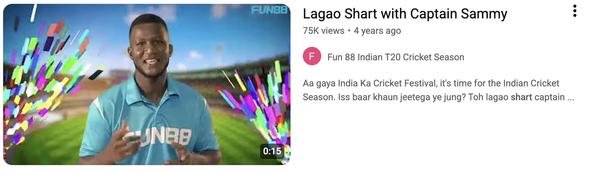

Campaign creative: Fun88 T20 Cricket Mania — "Lagao Shart" with brand ambassador Daren Sammy.
Lagi Shart
Normalising a hesitant category — in India's own words
The Situation
Fun88 was a new challenger in India's hyper-competitive real-money gaming market, with two problems. It had no distinct place in the consumer's mind against better-known rivals, and it operated in a category Indian consumers approach with hesitation — so trust and familiarity, not just reach, were the barriers.
The brief was to make Fun88 synonymous with placing a bet and to build durable recall, in a way that felt culturally native rather than imported — and to do it in the window right before IPL, when attention peaks.
What I Did
I built a brand campaign around an insight hiding in plain sight in everyday Indian speech: "Lagi Shart" — the phrase Indians throw down in the heat of an argument over a match, a fact, an election (roughly, "wanna bet?"). Using it as the campaign's content peg made betting feel familiar and unmistakably Indian, and tied the reflex of a confident wager directly to Fun88.
Brand Ambassador: Signed Daren Sammy — two-time T20 World Cup-winning captain — as the face of the campaign, borrowing his cricketing credibility and mass recall.
Creative: A TVC-quality hero film plus short vignettes on a relatable "two friends arguing over a match → 'Lagi Shart' → open the app" storyline, dubbed across five languages for top markets.
360° Distribution: OTT and video streaming, YouTube and Instagram influencers, news-site video inventory, owned social channels, and a dedicated landing page — one idea carried across the funnel.
Conversion & CRM: Wired the brand idea into app-store creative and SMS / WhatsApp / email journeys so the demand it created converted, not just registered as awareness.
Campaign Creative
The lead acquisition creative: 300% first-time deposit bonus, Daren Sammy as ambassador, and the "Lagao Shart" CTA — tying the brand idea to a concrete reward.
Exhibit — The Hero Film

The hero film with Daren Sammy, still live on the Fun88 India T20 channel — 75K views.
The Commercial Result
- Brand search volume up ~35% — the campaign turned a new name into one people actively looked for.
- App-install conversion rate up ~25%, as brand familiarity lifted install-to-signup efficiency.
- ROAS moved from 4x to 12x and cost per first-time deposit cut ~30% YoY, with organic traffic up 110% — brand demand made performance cheaper.
- National earned media: the Times of India, Branding in Asia and Cricket Addictor covered the launch — the line entered the press as Fun88's campaign identity.
Exhibit — National Press Coverage
Cricket Superstar Daren Sammy Named Brand Ambassador…
Branding in Asia · Sammy's films will be part of Fun88's upcoming integrated branding and marketing campaign #LagiShart.
FUN88 Announces Daren Sammy as Brand Ambassador
The Times of India · The brand films will be part of FUN88's upcoming integrated branding and marketing campaign #LagiShart.
Exhibit: national press coverage of the "Lagi Shart" launch and the Daren Sammy ambassadorship (#LagiShart).
"What I'm proudest of: a challenger earned trust in a hesitant category by borrowing the audience's own words — and the national press picked up the line as Fun88's."